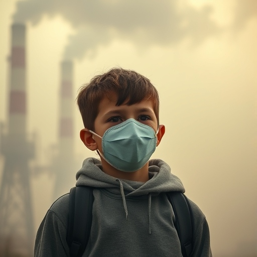
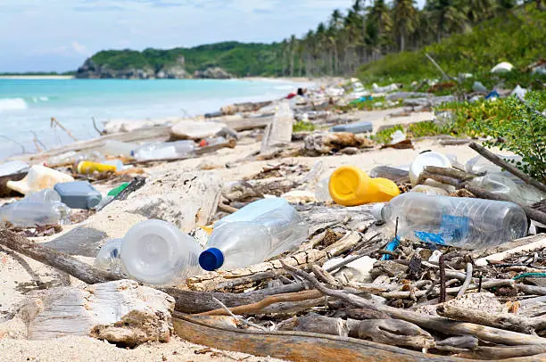
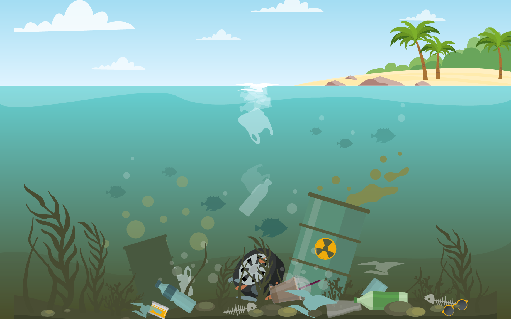
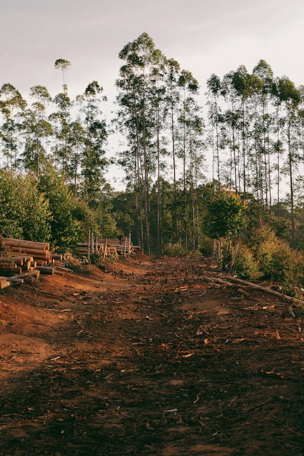
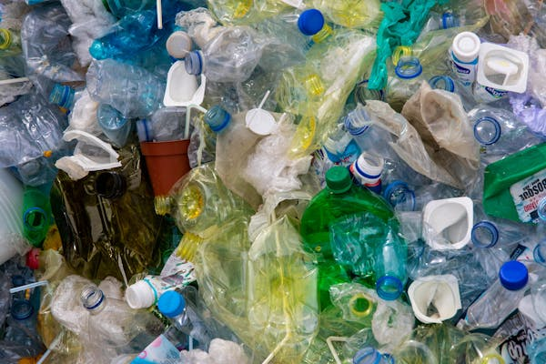

How Pollution is Degrading the Environment
Pollution is a pervasive and destructive force that threatens the survival of ecosystems and human health. It affects all aspects of life, from air and water to soil and living organisms. Here are some major environmental issues caused by pollution:
-
Air Pollution: The rapid industrialization,
urbanization, and reliance on fossil fuels have led to severe air
pollution. Industrial emissions and vehicle exhaust release harmful
gases like carbon monoxide, sulfur dioxide, nitrogen oxides, and
particulate matter. These pollutants contribute to:
- Global Warming: Greenhouse gases trap heat in the atmosphere, leading to a rise in global temperatures and exacerbating climate change.
- Smog: In urban areas, smog created by air pollution reduces visibility, increases respiratory illnesses, and causes premature deaths.
- Acid Rain: The release of sulfur dioxide and nitrogen oxides from factories and vehicles results in acid rain, which damages crops, forests, and buildings.
- Ozone Layer Depletion: The thinning of the ozone layer due to pollutants like CFCs allows harmful UV rays to reach Earth's surface, causing skin cancer and eye cataracts.
 -
Water Pollution: Water bodies around the world are
increasingly polluted by agricultural runoff, industrial discharge,
and untreated sewage. Pollutants such as chemicals, plastics, and
heavy metals seep into oceans, rivers, and lakes, leading to severe
consequences:
- Oil Spills: Spills from ships and drilling rigs harm aquatic life, damage ecosystems, and disrupt marine food chains.
- Nutrient Pollution: Excessive use of fertilizers in agriculture results in nutrient pollution, which causes algal blooms. These blooms reduce oxygen levels in the water, killing fish and other aquatic organisms.
- Waterborne Diseases: Contaminated water from industrial or agricultural waste leads to diseases such as cholera, typhoid, and dysentery, which pose major public health risks.
  -
Soil Degradation: Soil is a vital resource for
growing crops, but excessive use of chemical fertilizers,
pesticides, and industrial waste disposal has resulted in soil
contamination and degradation. This includes:
- Soil Erosion: Overgrazing, deforestation, and poor land management lead to the removal of topsoil, making it difficult for plants to grow and reducing agricultural productivity.
- Salinization: Over-irrigation, especially in arid regions, leads to the accumulation of salts in the soil, making it unsuitable for farming and reducing crop yields.
- Heavy Metal Contamination: Industrial activities introduce heavy metals like lead, mercury, and arsenic into the soil, which contaminate food supplies and harm human health.

-
Deforestation: The destruction of forests for
urbanization, agriculture, and logging is one of the leading causes
of biodiversity loss. Forests are essential for regulating the
climate, providing oxygen, and supporting a wide variety of species.
The effects of deforestation include:
- Loss of Biodiversity: The clearing of forests destroys habitats for countless plant and animal species, driving them to extinction.
- Disruption of Water Cycles: Deforestation can lead to the drying of local water sources and desertification, especially in regions that depend on forests for rainfall.
- Increased Carbon Emissions: Trees absorb carbon dioxide, a major greenhouse gas. Deforestation not only releases carbon into the atmosphere but also reduces the Earth’s ability to absorb CO2, thus accelerating climate change.
 -
Plastic Pollution: Plastic waste, which is
non-biodegradable, accumulates in landfills and oceans, causing
severe harm to ecosystems and wildlife. Its effects include:
- Threat to Marine Life: Marine animals ingest plastic, mistaking it for food, which can lead to their deaths through starvation, suffocation, or internal injuries.
- Microplastic Contamination: Small plastic particles known as microplastics have entered the food chain, affecting not only marine life but also terrestrial animals and humans who consume seafood.
- Flooding: Plastic waste clogs waterways, drains, and sewage systems, leading to blocked water flow and increased risk of urban flooding.
